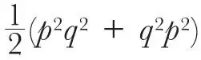

中文
中文R. Peierls
Editor’s Note
Rudolph Peierls here writes to counter a recent argument of George Temple, who had apparently demonstrated an inconsistency in quantum mechanics. Temple had assumed that one unique quantum-mechanical operator (a mathematical construct of the theory) must correspond to each of the classical variables of motion, such as positions and momenta. Peierls questions this assumption, noting that the order in which variables appear in the mathematical formalism matters in quantum theory, while it does not in classical theory. In this property of so-called non-commutation, in fact, lies the origin of Heisenberg’s uncertainty principle. 中文
THE question of the logical consistency of quantum mechanics has recently been discussed by Prof. G. Temple1 and by Dr. H. Fröhlich and Dr. E. Guth2. Temple arrives at an apparent contradiction, starting from principles which he states to be an essential part of quantum theory. From these principles contradictory results follow, as Temple shows by a perfectly rigorous deduction. (The existence of this deduction seems to have been ignored by Fröhlich and Guth.) 中文
The main assumption used by Temple is that to every function of the classical variables of motion (momentum, co-ordinate, etc.) there corresponds one unambiguously defined operator which may be taken as the representative of this function in quantum mechanics. Although this assumption can be found quite frequently in papers discussing the principles of quantum theory, and even in some text-books, I would like to emphasise that it is not at all necessary and—as one can see from Temple’s argument—not even possible in quantum mechanics. 中文
Quantum mechanics requires operators as representatives of physical variables for two purposes: to connect wave functions with experiments, actual or possible, and to calculate the time dependence of the wave function. In order to be able to apply quantum mechanics unambiguously to actual problems, one must, therefore, know (a) the operator representing the quantity measured by any given apparatus, and (b) the energy operator for any given physical system. Properly speaking, (a) is a special case of (b), for the properties of a measuring apparatus can always be analysed if its interaction energy with the object in question is known. 中文
If, then, we had an apparatus built in such a way as to measure, say, qp2q (p denoting the momentum, q the co-ordinate of a particle), this apparatus would be different from an apparatus measuring

, although in the limiting case of classical mechanics, where quantum effects are negligible, both would measure the same quantity. 中文
Before applying such an apparatus (assuming, for the sake of argument, that it exists although it probably does not) one would have to make sure, either by experimental investigation or by applying quantum mechanics to its working mechanism, which operator actually is to be associated with it. In other words, an apparatus which is quite suitable for measuring a certain quantity in the classical limit may not satisfy our requirements if we rebuild it on a smaller scale, because then quantum effects will have to be taken into consideration. 中文
That one never meets with any difficulty about the order of factors in the usual applications of quantum theory is due to the fact that only very simple operators occur in practice. The most typical of them is the energy of an electron in a field of force, p2/2m + V(q) (m = mass, V = potential energy). One generally assumes that the function in this exact form, without quantum corrections, has to be taken as the energy operator of a particle the energy of which would be given by the same expression in classical mechanics. This assumption seems very natural, but it cannot be proved on mere theoretical grounds. All one can say is that this expression is the most plausible amongst a variety of different expressions, which all become equal in the classical limit but differ by terms like, for example, pV – Vp = (h/2πi) grad V (h = Planck’s constant). It is for the experiment to show that the most plausible choice corresponds to reality and that such correction terms are absent. 中文
That the absence of these correction terms cannot be inferred from mere theoretical considerations is proved by the fact that when relativity and spin corrections are taken into account, such terms actually do occur. 中文
(136, 395; 1935)
R. Peierls: Physical Laboratory, University, Manchester, Aug. 5.
References:
1. Nature, 135, 957, June 8, 1935.
2. Nature, 136, 179, Aug. 3, 1935.